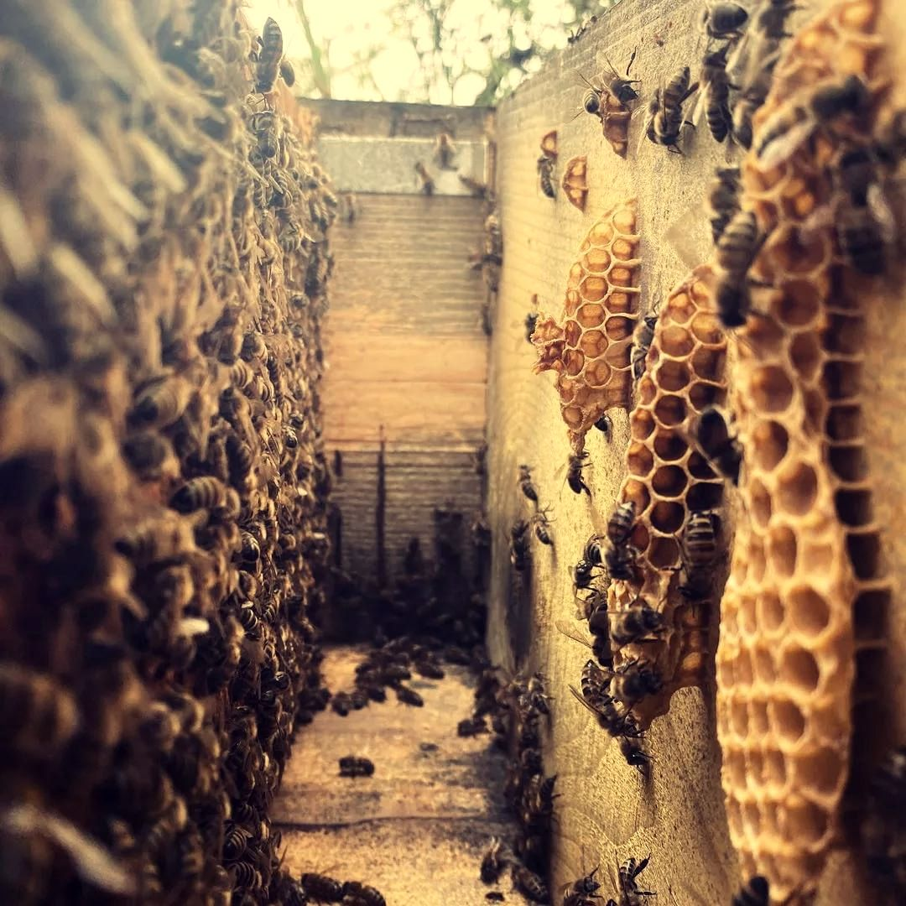

Після останньої відкачки пасічник готує бджіл до зими. Далі настає тиша: узимку вулик краще не відкривати.
Бджолам залишають достатньо меду й готують вулики до холодів. За звичними орієнтирами сім’ї на зиму потрібно порядку 15–25 кг меду, залежно від сили сім’ї й регіону. Осінь також час, коли пасічники обробляють сім’ї від кліща варроа: після відкачки, щоб препарати не потрапили в мед. Про цього паразита й інші ризики розповідає стаття «Що загрожує бджолам». Ще вулики утеплюють і звужують льотки, щоб холод і миші не потрапили всередину.
Восени бджоли заліплюють щілини прополісом, щоб у вулик не дув протяг. Трутнів, які вже не потрібні, виганяють: у зиму їх не годують. Запаси меду й перги бджоли розміщують ближче до місця, де збереться клубок. Усе це вони роблять самі, а пасічник лише створює умови: стежить, щоб сім’я була сильною й мала запас.
У холодну погоду вулики без потреби не відкривають: бджолам треба спокійно скласти запаси й зібратися в клубок. Довгі огляди восени вихолоджують гніздо й шкодять сім’ї.
Наприкінці літа, коли розплоду стає менше, у сім’ї з’являються так звані зимові бджоли. Вони мають більші запаси жиру в тілі й саме вони переживають холоди, а навесні вигодовують перші личинки. Тому осінню сила сім’ї важливіша за кількість меду в банках.
Взимку бджоли збираються в тісний клубок і гріють одна одну: вони ворушать крильцевими м’язами, а ті, що ззовні, поступово міняються місцями з тими, що всередині. Зимові бджоли живуть значно довше за літніх: місяцями, а не кількома тижнями. Пасічник без потреби вулик не відкриває. Інколи він просто слухає гул, щоб зрозуміти, що сім’я жива. У теплий день бджоли можуть вилетіти на облет.
У теплий зимовий день температура іноді піднімається настільки, що бджоли вилітають із вулика. Це нормально: вони очищаються й швидко повертаються. Пасічник не лякається, а дивиться, чи нема біля вулика багато мертвих бджіл: це може бути сигналом проблеми.
Зимові місяці — час для рамок, інвентарю й воску: з нього роблять свічки.
Навесні сім’я знову росте. Перший теплий день показує, як вона перезимувала: сильні вилітають дружно, слабкі ледь помітні. Тоді починається новий сезон, і пасічник уперше за місяці відкриває вулики.
Скільки меду залишають бджолам на зиму?
Орієнтир залежить від регіону й сили сім’ї, зазвичай це 15–25 кг. Мед, що лишається в гнізді, і є їхнім зимовим запасом.
Чи сплять бджоли взимку?
Не сплять: клубок гріється, а бджоли повільно споживають мед.
Чи можна відкривати вулик узимку?
Краще ні: холод шкодить сім’ї. Пасічник дивиться й слухає ззовні, а відкриває вулик лише за справжньої потреби.
Чому пасічник не качає мед восени?
Осінній мед — це запас самих бджіл. Пасічник забирає лише те, що понад зимові потреби сім’ї, і лишає решту в гнізді.